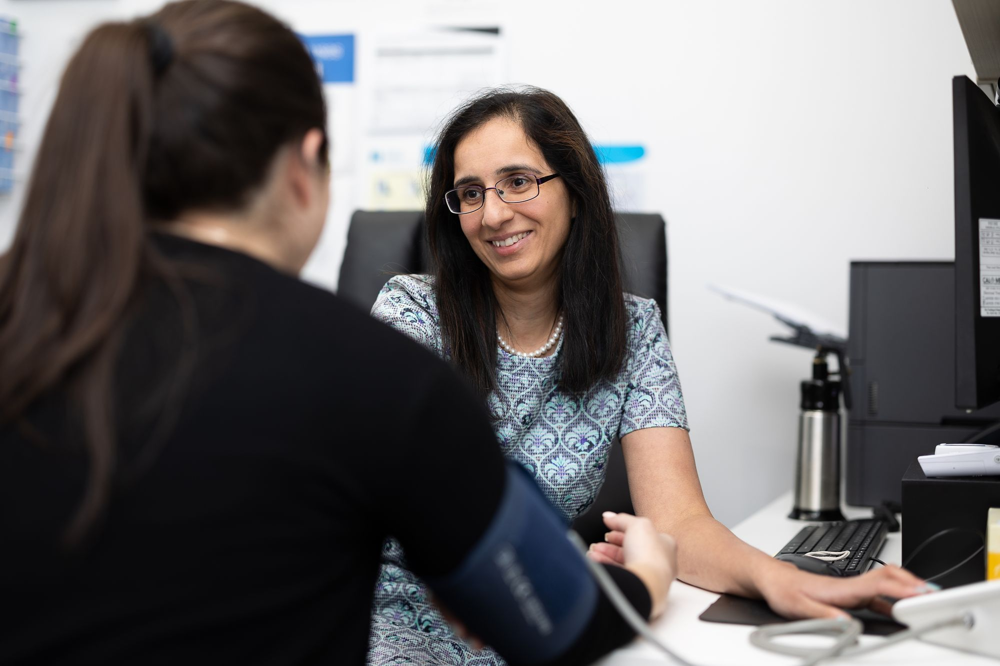

Trusted care,
close to home.
A fully-accredited general practice on Whitehorse Road, bringing GP care, telehealth, on-site pharmacy and pathology, and allied health together under one roof, open seven days a week.

Comprehensive care for your whole family
From everyday appointments to skin checks and chronic disease care, our team keeps your health in one familiar place.
GP Services
Everyday and complex care from experienced GPs and registrars, for every age and stage.
Learn more →Skin Cancer Checks
Thorough skin examinations and spot checks using advanced imaging, with same-day results discussed.
Learn more →Allied Health
Coordinated support that works alongside your GP, so your care plan lives in one place.
Learn more →On-site Pharmacy
Fill your scripts before you leave. No second trip, no waiting somewhere else.
Learn more →On-site Pathology
Blood tests and sample collection on the day, in the same building as your appointment.
Learn more →After-Hours Access
Care that stays available when the clinic doors close, for the moments that cannot wait.
Learn more →See your doctor from home
Can't make it in? Book a telehealth appointment and speak with a Balwyn Central Medical doctor by phone or video. Scripts, referrals, results and follow-ups, all without leaving the house.
We look after families here, often the same ones, year after year.
Care that stays together
Established in 2015 and part of ICO Health Group, we are a fully-accredited practice built around continuity of care, so seeing your doctor, filling a script and getting tests done can all happen in one visit.
- Bulk billing available for eligible patients
- On-site pharmacy, pathology and full-time nursing support
- Telehealth and after-hours options for when you can't come in
- Two Whitehorse Road sites, open every day of the week
Find your nearest clinic
Both practices sit within a short walk of each other in the heart of Balwyn.
427 Whitehorse Rd
Balwyn VIC 3103
Billing Policy Update · Effective 1 July 2026
From 1 July 2026, weekday visits are bulk billed for concession cardholders and children 15 & under. Non-concession patients pay a $42 out-of-pocket fee on weekdays, $50 on Saturdays and $55 on Sundays. A $40 non-rebateable fee applies to missed appointments.
See the full fee tableCare the community trusts
Representative patient feedback shown for design purposes.
Associated clinical services
Balwyn Central Medical is part of the ICO Health Group family, connecting you to a broader network of trusted healthcare providers.
Ready when you are
Book online in a couple of minutes, start a telehealth consult, or call the practice and our team will find a time that suits.